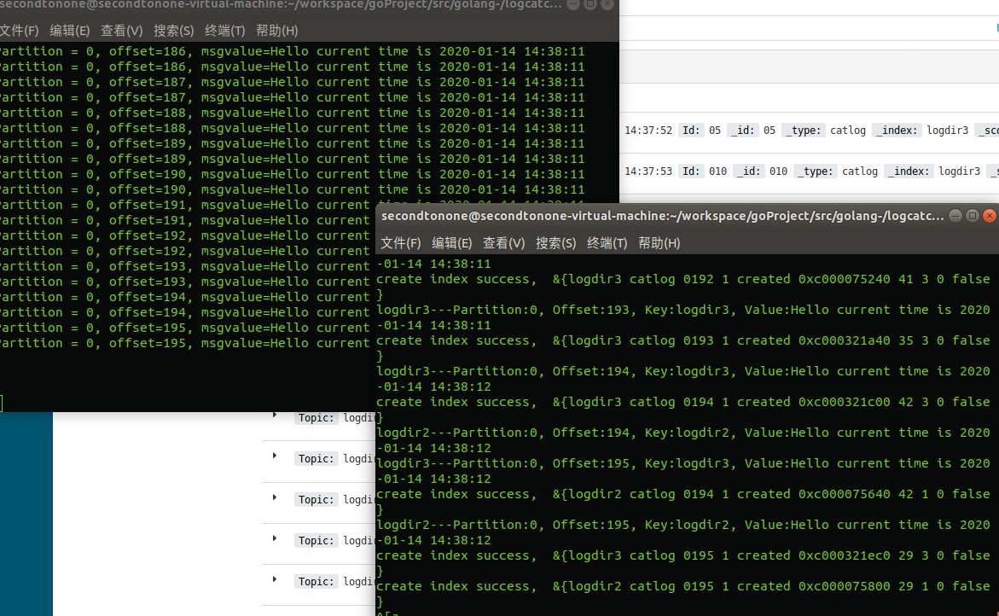
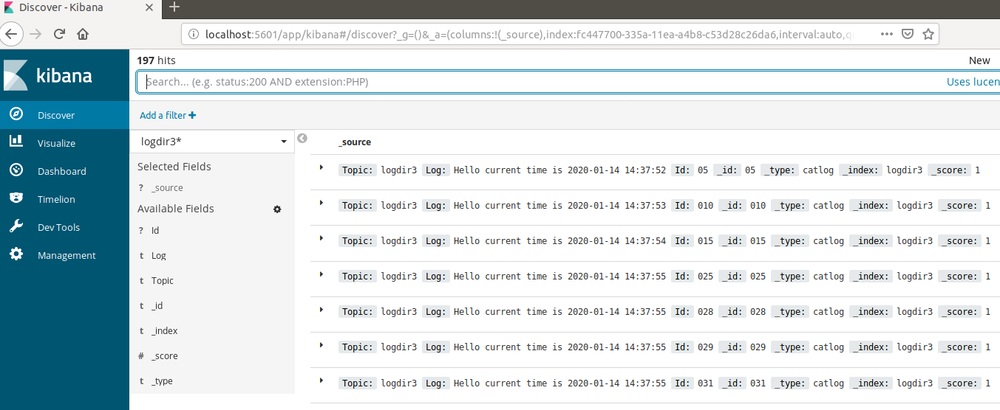

前情回顾
前文我们完成了日志采集系统基本功能，包括日志监控，日志采集，配置热更新，协程动态启动和关闭，同时扩充支持了etcd管理文件路径。
本节目标
本节新增日志查询和检索功能。基本思路是将日志信息从kafka中读取，然后放到elasticsearch中，elasticsearch是一个分布式多用户能力
的全文搜索引擎，我们可以通过它提供的web接口访问和查询指定数据。另外，为了更方便的检索和查询，可以利用kibana配合elastic可视化
查询。Kibana 是为 Elasticsearch设计的开源分析和可视化平台。
源码实现
将日志从kafka中读取并解析写入elastic这部分功能，我们将其提炼到另外一个进程中，单独启动监控并处理kafka数据。
1 | package main |
主函数调用了我封装的kafconsumer包的读取消息函数GetMsgFromKafka。
1 | func GetMsgFromKafka() { |
GetMsgFromKafka中创建了kafka消费者，然后根据配置调用ConstructTopicSet构造topic集合，topicSet集合其实是一个map，
保证了集合中的topic不重复。然后调用ConsumeTopic函数根据topic从kafka取出数据。
1 | func ConstructTopicSet() map[string]bool { |
ConstructTopicSet读取配置中的topic列表，然后将这些topic放到map中返回。
1 | func ConsumeTopic(consumer sarama.Consumer) { |
ConsumeTopic实际是将topic集合中的topic遍历放到map中，然后启动协程调用ReadFromEtcd函数读取消息。
1 | func ReadFromEtcd(topicData *TopicData) { |
ReadFromEtcd函数将kafka中读取的数据写入elastic中，同时如果协程崩溃向父协程发送通知，重启该协程。
效果展示
我们启动之前的日志监控程序，然后启动现在设计的信息处理程序。
可以看到日志不断被写入时，监控程序将日志的变化信息写入kafka。
同时，信息处理程序不断的从kafka中读取数据写入elastic。

我们通过kibana查询数据

源码下载
https://github.com/secondtonone1/golang-/tree/master/logcatchsys
感谢关注我的公众号